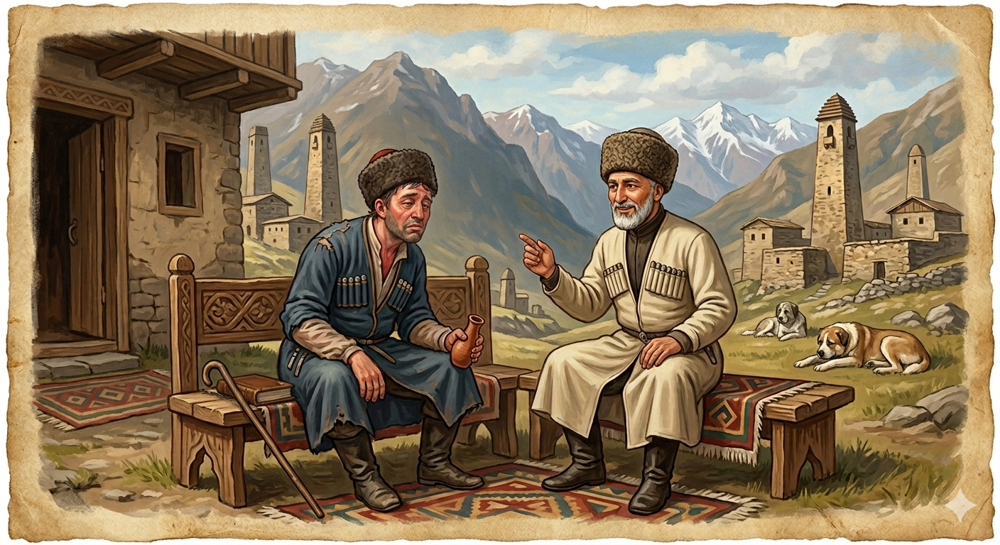

И.А. Дахкильгов. Хьехаме дувцарш - поучительные рассказы-притчи.
И.А. Дахкильгов. Хьехаме дувцарш - поучительные рассказы-притчи. Из ингушского фольклора.

Яьсса моттиг лех цо
Къаракъа тӀера волча цхьанне аьннад ший доттагӀчунга: - Фуд а хац сона. Къаракъ мелча, из деррига а кертах доал-кха сона. ДоттагӀ хьаькъал долашагӀи маларашта тӀера воацаши хиннав. Жоп деннад цо: - Иштта хила доагӀаш а да из. Къаракъо шийна яьсса моттиг лехалга хаций хьона?
РУССКИЙ
Она ищет пустое место
Один выпивоха пожаловался другу: - Не знаю, что и делать. Как выпью водки, так она сразу же идет мне в голову. Его друг был умнее и был трезвенником. Он ответил: - Так и должно быть. Разве ты не знаешь, что водка всегда ищет пустое место?
ENGLISH
She's looking for a free space
A heavy drinker complained to his friend: 'I don't know what to do. As soon as I drink vodka, it goes straight to my head.' His friend was wiser and didn't drink. He replied: 'That's how it's meant to be. Don't you know that vodka always looks for an empty space?'
НОХЧИЙН
ПОГОВОРКИ
Боджах кхера веза хьалхашкара, говрах - тӀехьашкара, воча сагах - массанахьара. - Козла бойся спереди, коня - сзади, а плохого человека - со всех сторон. Газа муӀаех мукх хинабац, нанас ца ваьчох воша хиннавац. - Как из козлиного рога не получить ячменя, так и рожденному не твоей матерью не стать тебе братом. Дог доацача Ӏатто цӀог доаца Ӏаса даьд. - Равнодушная ко всему корова отелилась бесхвостым теленком. Чакхдаргдоаца хӀама дӀа ма доладе. - Не начинай дела, обреченного на провал. Ӏу воаца Ӏул - берзалой фос. - Стадо без присмотра - волчья добыча. Воча вордо никъ бохабаьб, гирдз даьннача говро рема толхаяьй, воча сесаго цӀа дохадаьд. - Плохая арба дорогу портит, чесоточный конь портит табун, а плохая жена разваливает семью. КӀайча кулгашта наьха къахьегам беза. - Белые руки чужой труд любят. Тахан ахчах ийцача новкъостах кхоана моастагӀа хиннав. - Купленный сегодня друг (за деньги) уже завтра сделается врагом. Хьаьр кхера а кхастац ялат доацаш. - Без зерна не крутятся и жернова. Уст хила гӀийрта пхьид яьттӀай. - Пыжилась лягушка стать быком и… лопнула.